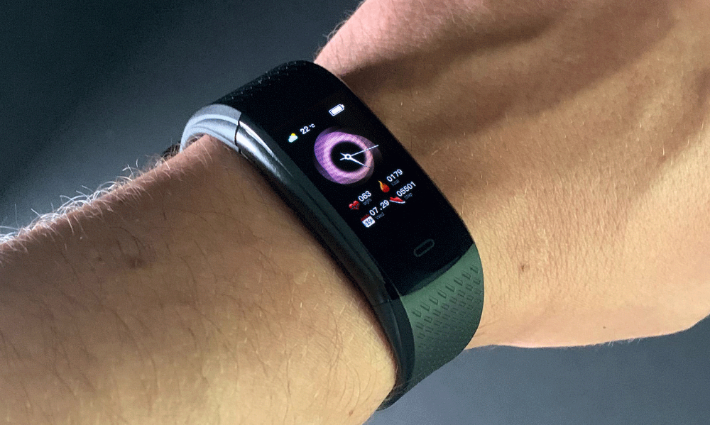
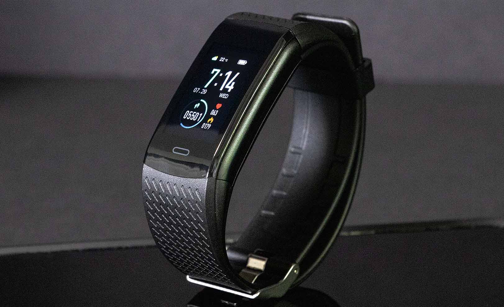
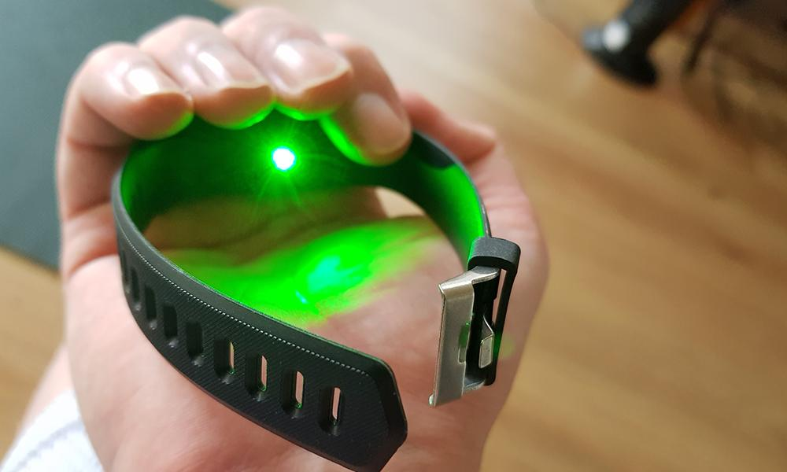
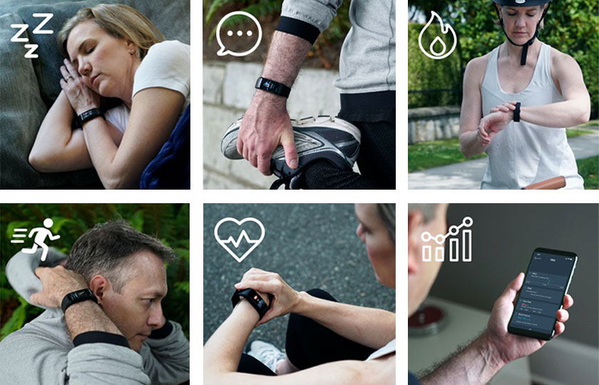
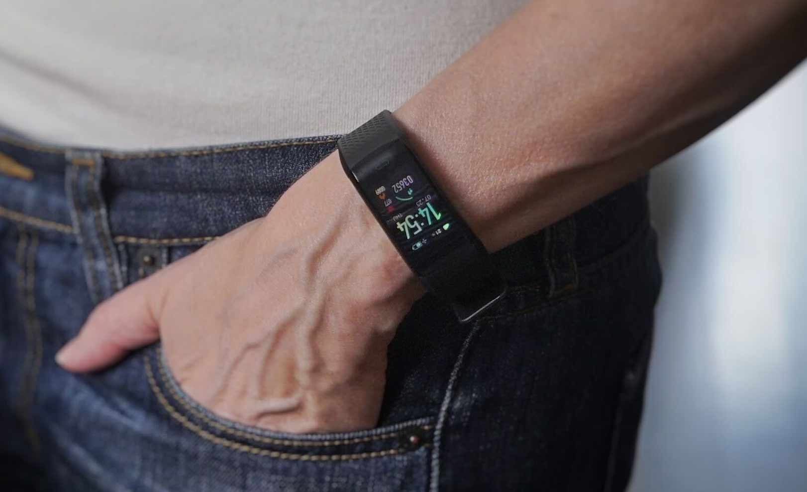
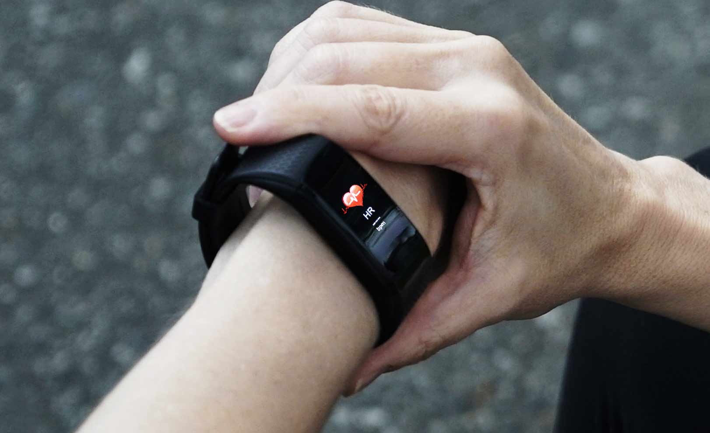
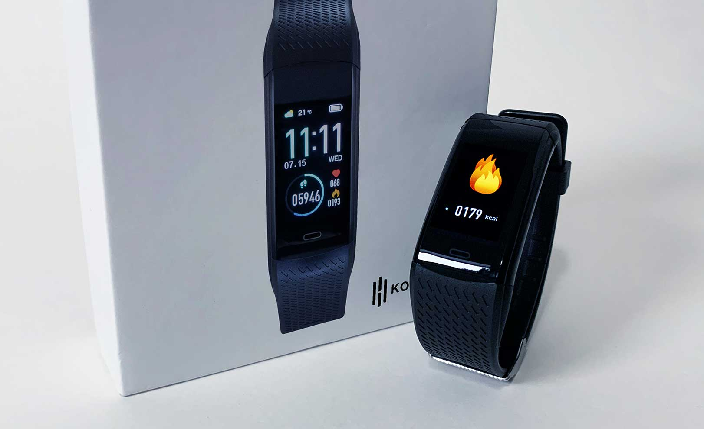

You Do Not Want To Miss Out On The Health Benefits Of This New Classy Smartwatch!
by James Morgan

Discover why this new smartwatch is gaining popularity in the Usa and selling out everywhere....
This new elegant smartwatch has become the talk in town, especially among seniors. It is selling out everywhere. Here is the secret.
Over the years, the smartwatch industry had been left to several big companies that have set the prices of their smartwatches too high for people to afford. But that is all changing! Thanks to a startup company that has introduced a game changer into the market.
KoreTrak, the startup company, has found out a way to offer a superior product that none of the big tech companies ever thought about. And the beauty of it all is that KoreTrak is offering it at a fraction of the price of the smartwatches from those mega tech companies.
What is KoreTrak?

KoreTrak is the company behind the new stylish KoreTrak smartwatch. It is an expert in tech gadgets and its engineers joined forces with renowned watchmakers around the world to come up with KoreTrak.
What is making KoreTrak trend that much?
KoreTrak is more than just the usual type of digital smartwatch. It combines the benefits of a fitness tracker, health monitor and a hands-free headset.
The smartwatch feels more comfortable on your wrist than most of the luxury smartwatches you have probably come across.
Its outward appearance is sporty and it blends in very well in workouts and outdoor activities. It has an aluminum shell and a tempered touchscreen that will hardly break or scratch.
In my honest opinion, this smartwatch a next-generation smartwatch. You can answer calls, read incoming messages, listen to music, monitor your heartbeat, sleep monitor, etc. No wonder it is selling out that fast.
But above all that, what makes it break ranks with its peers is the feature that can track your life conditions.
KoreTrak has a green laser at the bottom side that is responsible for all the measuring your heart rate, blood pressure, blood oxygen level (SpO2), and even calculate your beats per minute (BPM) in real-time.

The green laser behind the watch is the secret!
The smartwatch can help you monitor your blood pressure and oxygen levels.
Why do I need that ?
KoreTrak helps you track your heart rate and other indicators.And this gives you the advantage of keeping an eye for potential problems even before they occur.
No wonder senior citizens are going for this smartwatch!
At the moment, no other watch holds this advantage of actually saving your life.
What are the other features of KoreTrak?

Below are some of the features that are making users rate this smartwatch 5 star:
- 24/7 blood pressure and heart rate monitoring – as long as you are wearing it on your wrist
- A 1.3” colored touch control display – it is large enough, HD clear and easy to use for touch control
- It is Water Resistant – meaning you can wear it while working out in the shower, pool or out in the rain
- It has a step counter – Enables you to set goals especially when working out
- Sleep monitoring – helps in monitoring your body and understanding your lifestyle
- It monitors your calorie – this comes in handy especially if you are trying to lose weight
- It has an alarm – this acts as a reminder for your important events
- Incoming calls and notifications – It symphonizes with your phone to notify you of incoming calls and allows you to even receive the call via wireless headsets without removing your phone from the pocket
- Long-life battery – the battery is very efficient and you do not have to keep on recharging
- Sedentary monitoring – It informs you when you are required to be sitted and when you are required to move a lot
- Track lost phone – you can call your lost phone using KoreTrak to locate it
- Stylish – it is a classy looking smartwatch
- Take a photo – you can use your KoreTrak smartwatch to take a photo on your smartphone
- Listen and control your music – You can use your KoreTrak to control the volume of your music and even change between tracks
For almost anyone, these are the most critical functions. They made it so you can be constantly updated and safe.
Few comments from users :

"This watch exceeded my expectation of a smartwatch. And above everything, it was just at a fraction of the price of other smartwatches which have far less to offer compared to this. I never thought it could be a smartwatch!" – Robert W.

"As a senior citizen, I firmly understand the importance of monitoring my health especially the condition of my heart after suffering a mild stroke two years ago. KoreTrak came to my aid and I can now monitor my health wherever I go" - George D.

"I work out a lot and KoreTrak is the best smartwatch that I have ever purchased. Besides the fact that is it very cost-efficient, it helps me accomplish my set goals during working out by using the step counter and it also helps me monitor my heartbeat rate. I also love the fact that it is a classy watch and it easily blends it with my gear" - Kerry S
How much does KoreTrak cost?
Knowing how much other big tech companies sell their smartwatches although they do not possess the features that KoreTrak possesses, it is surprising to find out that KoreTrak only goes for $49.
Click here to claim a discounted KoreTrak (if it's still available) >>
Compared to other watches going for $1000 with no heart monitoring capabilities, $49 is a small price to pay!
How comes KoreTrak costs so little?
KoreTrak is a direct consumer brand, meaning they do not incur advertising charges. Also, they only sell the smartwatch online, so no middle persons in the name of retailers involved.
In most cases when you buy from the big companies, you not only buy the smartwatch but also buy their prestigious brand names. You also have to pay their CEOs, pay for their advertising, etc. No wonder their watches cost that expensive!
For KoreTrak, it is different, you only pay for what you are buying. And even more, interestingly, they are currently giving a discount!
Should I purchase it now or wait??
If you wait, you may find the stock has run out! The smartwatch is selling out like crazy! If you are looking for a smartwatch that can monitor your heart, don’t waste time.
Also, if you are looking to gift a loved one, family member or friend, KoreTrak is a perfect choice. They will think you spent a huge chunk of money on it.
Click here to claim a discounted KoreTrak (if it's still available) >>
Be aware they'll pass back to full charge as soon as it goes viral and demand grows, so order rapid!
Where can I buy KoreTrak?
The time to buy the KoreTrak is now, this discount won't last long and it's selling like crazy.
Get your KoreTrak from the official website here.
The promotion price is amazing for a device this high-level. We are saying, certainly, choose one up before they cross... It's a no-brainer!

The discount means the KoreTrak is selling out rapidly in the right now. Ever since the KoreTrak was on major international media, an incredible amount of buzz has been generated. Due to its popularity and positive reviews, the company is so confident in their product that they are now offering a 50% discount.